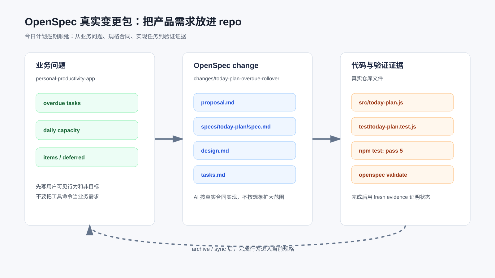

模块实战：用 OpenSpec CLI 推进一次真实产品需求
这次从一个真实产品需求开始：个人效率助手每天生成“今日计划”时，要自动纳入逾期未完成任务，但不能把一天排爆。
OpenSpec 在这里的作用，是把需求、设计、任务和验证证据放进同一个变更包里，让 AI 的实现有边界，也让人能复查每一步为什么这么改。
配套代码仓库 DavidDingXu/learn-ai-coding 按一个大仓库组织，仓库根目录下有业务 module 和工具 module。这里使用业务 module：personal-productivity-app，后面的 OpenSpec、Superpowers、验证和规则沉淀都围绕同一条业务主线展开。
对应过程记录在：
learn-ai-coding/personal-productivity-app/dev-process/01-openspec-today-plan-rollover.md
需求很常见：
用户每天早上打开个人效率助手，希望看到今天该做什么。
昨天没做完的任务不能消失，但系统也不能把所有历史任务都塞进今天。
这类需求在真实项目里很容易扩散：
顺手做 UI。
顺手接数据库。
顺手加提醒系统。
顺手做复杂排程算法。
顺手把 blocked 任务也塞进今日计划。
OpenSpec 的价值不是让文档更漂亮，而是把“为什么做、做什么、不做什么、怎么验证”放进仓库，让 AI 在动手前读合同。

先核对工具是真的
不能只说“按 OpenSpec 式材料做一下”。这里必须跑真实 OpenSpec CLI，并把 proposal、design、tasks、spec 和 validate 结果留在仓库里。
本机先核对当前包：
npm view @fission-ai/openspec name version bin engines --json
关键输出：
{
"name": "@fission-ai/openspec",
"version": "1.4.1",
"bin": {
"openspec": "bin/openspec.js"
},
"engines": {
"node": ">=20.19.0"
}
}
本机环境：
node --version
# v24.14.1
npm --version
# 11.11.0
安装：
npm install -g @fission-ai/openspec
验证：
openspec --version
# 1.4.1
这一步很重要。OpenSpec、Spec Kit、Superpowers 这类工具变化很快，不能靠历史印象写命令。
初始化项目
示例项目不是工具项目，而是一个产品领域逻辑项目：
learn-ai-coding/personal-productivity-app
初始化 OpenSpec：
cd learn-ai-coding/personal-productivity-app
openspec init --tools codex .
关键输出：
OpenSpec Setup Complete
Created: Codex
5 skills and 5 commands in .codex/
Config: skipped (non-interactive mode)
Getting started:
Start your first change: /opsx:propose "your idea"
这说明 OpenSpec 真实生成了：
.codex/skills/
openspec/changes/
openspec/specs/
注意这里的 /opsx:propose 是 OpenSpec 给 Codex 配的 slash command 入口。为了让过程能在普通终端里复查，下面主要展示 CLI 命令。
创建真实 change
创建需求：
openspec new change today-plan-overdue-rollover \
--description "今日计划自动纳入逾期未完成任务，并在每日容量限制下给出顺延列表。" \
--goal "让个人效率助手每天生成可执行的今日计划，避免逾期任务丢失或一天被排爆。" \
--json
输出里会看到 change 的真实路径：
{
"change": {
"id": "today-plan-overdue-rollover",
"path": "learn-ai-coding/personal-productivity-app/openspec/changes/today-plan-overdue-rollover",
"schema": "spec-driven"
}
}
此时还没有实现代码，只有一个 change 壳子。
下一步不能靠猜，要问 OpenSpec 当前 change 需要什么产物：
openspec status --change today-plan-overdue-rollover --json
OpenSpec 返回的工作流是：
proposal -> specs/design -> tasks
apply 前置是：
tasks
这意味着实现前至少要有 proposal.md、specs/**/*.md、design.md 和 tasks.md。
proposal：把产品问题写清楚
先读取 OpenSpec 的 proposal 指令：
openspec instructions proposal --change today-plan-overdue-rollover --json
它要求 proposal 回答四件事：
Why
What Changes
Capabilities
Impact
本次写入：
openspec/changes/today-plan-overdue-rollover/proposal.md
核心内容不是“新增一个函数”，而是产品问题：
今日计划如果只看当天任务，会漏掉昨天或更早没完成的任务；
如果把所有逾期任务一次性塞进今天，又会把一天排爆。
做什么：
生成今日可执行任务。
自动纳入逾期未完成任务。
排除已完成、阻塞和未来任务。
按容量输出 items 和 deferred。
输出 usedMinutes 和 remainingMinutes。
能力名：
today-plan
这会决定后续 spec 文件路径：
openspec/changes/today-plan-overdue-rollover/specs/today-plan/spec.md
specs：写成可测试需求
读取 specs 指令：
openspec instructions specs --change today-plan-overdue-rollover --json
本机 OpenSpec 明确要求：
每个 requirement 使用 ### Requirement
每个 scenario 使用 #### Scenario
规范性描述使用 SHALL / MUST
每个 requirement 至少一个 scenario
这不是格式洁癖。
如果 scenario 写不出来，说明需求还不能被测试约束。
本次 spec 拆成三个 requirement：
Generate today's executable plan
Respect daily capacity
Prioritize overdue work predictably
其中一个场景是：
WHEN 输入包含逾期 open 任务、今天到期 open 任务和未来 open 任务
THEN 今日计划只包含逾期和今天到期的 open 任务
AND 逾期任务排在今天到期任务之前
这直接映射到测试：
carries overdue unfinished tasks into today plan before today tasks
到这里，OpenSpec 已经把“用户想要什么”变成了可验证合同。
design：限定实现边界
读取 design 指令：
openspec instructions design --change today-plan-overdue-rollover --json
本次 design 重点写四个决策：
使用纯领域函数。
只让 open 任务进入候选。
逾期任务优先于当天任务，优先级优先于日期年龄。
容量选择采用顺序扫描，放不下进入 deferred，继续尝试后续小任务。
也明确不做：
页面展示不放进这个 OpenSpec 变更。
不做数据库。
不做账号系统。
不接日历。
不做复杂排程优化。
真实项目里，设计文件不一定要长，但必须挡住需求扩散。
对 AI 来说，这比一句“不要做太多”有效得多。
这里要区分领域规则和页面展示：OpenSpec 变更先把领域规则做实，页面只能复用 buildTodayPlan 的输出。如果页面要引入独立状态、接口或排程逻辑，那就是另一个需求。
tasks：让实现可以逐项审查
读取 tasks 指令：
openspec instructions tasks --change today-plan-overdue-rollover --json
本机 OpenSpec 要求 checkbox 格式：
- [ ] 1.1 ...
因为 apply 阶段会解析 checkbox。
本次 tasks 拆成 8 项：
1.1 跑 npm test 并记录缺失实现的失败。
2.1 新增 src/today-plan.js。
2.2 过滤 open overdue / due-today。
2.3 排序。
2.4 容量选择和 deferred 输出。
2.5 输入校验。
3.1 跑 npm test。
3.2 写过程记录。
用 OpenSpec 检查 apply 状态：
openspec instructions apply --change today-plan-overdue-rollover --json
初始输出：
{
"progress": {
"total": 8,
"complete": 0,
"remaining": 8
},
"state": "ready"
}
这比“请按计划实现”更可靠。
AI 和人都能看到还有几项没完成。
严格校验 spec
实现前先验证 OpenSpec change：
openspec validate today-plan-overdue-rollover --strict --json --no-interactive
结果：
{
"summary": {
"totals": {
"items": 1,
"passed": 1,
"failed": 0
}
}
}
这一步不能省。
否则你可能写了一堆看似 OpenSpec 的文件，但工具根本识别不了。
TDD 红灯：先证明测试能抓住缺失行为
测试已经写在：
test/today-plan.test.js
第一次运行：
npm test
失败：
Error [ERR_MODULE_NOT_FOUND]: Cannot find module
'/learn-ai-coding/personal-productivity-app/src/today-plan.js'
这个失败是有效红灯：测试已经指向 buildTodayPlan，但生产实现还不存在。
如果你没见过红灯，后面绿灯没有太大意义。
实现：只补领域函数
新增：
src/today-plan.js
核心 API：
export function buildTodayPlan({ date, capacityMinutes = 0, tasks = [] } = {}) {
// ...
}
输入任务字段：
id
title
dueDate
status
priority
estimateMinutes
输出：
date
capacityMinutes
usedMinutes
remainingMinutes
items
deferred
这里没有接 UI，也没有写文件。
因为 OpenSpec design 已经限定：当前变更只做领域逻辑。结果页只能调用这个函数展示输出，不能改写需求合同。
绿灯：业务场景通过
再次运行：
npm test
输出：
✔ carries overdue unfinished tasks into today plan before today tasks
✔ does not include completed or blocked tasks
✔ respects daily capacity and returns overflow as deferred tasks
✔ sorts overdue tasks by priority before due date age
✔ rejects invalid plan inputs before generating a plan
ℹ pass 5
ℹ fail 0
这组输出只覆盖领域函数测试。完整样例还会通过结果页演示测试确认页面没有另写一套业务规则。
这 5 个测试不是为了凑覆盖率。
它们分别对应：
逾期任务是否顺延。
不可执行任务是否排除。
容量是否生效。
排序是否符合产品优先级。
输入边界是否被拒绝。
完成状态：让 OpenSpec 自己确认
实现和记录完成后，tasks 被勾选。
再次运行：
openspec instructions apply --change today-plan-overdue-rollover --json
输出：
{
"progress": {
"total": 8,
"complete": 8,
"remaining": 0
},
"state": "all_done"
}
这时再说“这个 change 完成”，才有证据。
这类需求为什么适合 OpenSpec
不是所有需求都需要 OpenSpec。
如果只是改一个错别字、补一行日志、换一个按钮文案，用 OpenSpec 会显得重。
但这次需求值得用，因为它有：
状态边界：open / done / blocked。
日期边界：overdue / due-today / future。
容量边界：items / deferred。
排序边界：priority / dueDate / id。
交付边界：当前变更只做领域函数，不做 API/存储；页面展示只能复用这个函数，不能引入另一套业务规则。
这些边界只靠聊天提醒，很容易在实现中丢掉。
OpenSpec 把边界放进仓库，让后续 AI、reviewer 和你自己都能复查。
迁移到自己的项目
你可以把这个模式迁移到很多业务需求：
订单超时自动关闭。
工单 SLA 逾期升级。
会员权益到期提醒。
账单分期到期滚动。
审批任务逾期催办。
内容审核任务优先级队列。
只要需求里有状态、时间、优先级、容量、过滤或排序，就适合先写 spec。
给 AI 的指令可以这样写：
请先读取 openspec/changes/<change>/proposal.md、design.md、specs/**/*.md、tasks.md。
只实现 tasks.md 中未完成事项。
如果实现中发现需求边界不清，先更新 OpenSpec 产物，不要直接扩大代码范围。
实现前跑现有测试，完成后跑 openspec validate 和项目测试。
配套资料
- OpenSpec 过程记录：
learn-ai-coding/personal-productivity-app/dev-process/01-openspec-today-plan-rollover.md - OpenSpec 变更包：
learn-ai-coding/personal-productivity-app/openspec/changes/today-plan-overdue-rollover/ - 领域实现：
learn-ai-coding/personal-productivity-app/src/today-plan.js - 结果页：
learn-ai-coding/personal-productivity-app/index.html - 页面演示数据：
learn-ai-coding/personal-productivity-app/src/today-plan-demo.js - 业务测试：
learn-ai-coding/personal-productivity-app/test/today-plan.test.js - 页面演示测试：
learn-ai-coding/personal-productivity-app/test/today-plan-demo.test.js - OpenSpec 上游仓库：https://github.com/Fission-AI/OpenSpec